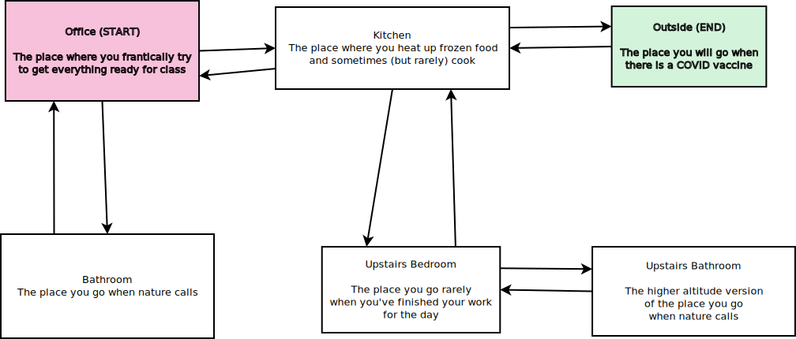

Lab 2: Choose Your Own Adventure (3 Points)
Chris Tralie, heavily inspired by Bill Mongan
Due Monday 9/21/2020
Overview / Logistics
The purpose of this lab is to give you practice with the HashMap data structure and with String data types, in the service of a fun, open ended, creative application. This idea was inspired by an assignment by Bill Mongan.
There is no skeleton code for this lab. Instead, you should make a new project in NetBeans, and when you are finish, you should zip it up and submit it on Canvas.
Learning Objectives
- Use appropriate types in HashMap data structures
- Properly index arrays
- Choose an appropriate loop structure for a given task
- Write a program with minimal code in the main function
Background
Choose Your Own Adventure books are a series of books from the '80s and '90s in which the reader takes a more active than usual role. In particular, the books are written in the second person, and they turn over key decisions to the reader. Based on these decisions, the reader jumps to different pages to see the outcome of those decisions.
In this lab, you'll be designing a Choose Your Own Adventure-style program to tell a dynamic story. There are four pieces of information that you should represent in your program
- A list of places you can be in your world
- A little blurb describing each place
- A list of places you can travel to next from each place
- Which place you start, and which place ends
Your Below is a very simple example to illustrate this idea, which pretty much sums up my life these days as your instructor (lol). The game starts in the office, and it ends whenever someone reaches the outside.
A sample run through the program might look like this
-
You are in the Office. The place where you frantically try to get everything ready for class. Where would you like to go?
Options: [Kitchen, Bathroom]
Input: Kitchen
-
You are in the Kitchen. The place where you heat up frozen food and sometimes (but rarely) cook. Where would you like to go?
Options: [Office, Upstairs Bedroom, Outside]
Input: Upstairs Bedroom
-
You are in the Upstairs Bedroom. The place you go rarely when you've finished your work for the day. Where would you like to go?
Options: [Kitchen, Upstairs Bathroom]
Input: Kitchen
-
You are in the Kitchen. The place where you heat up frozen food and sometimes (but rarely) cook. Where would you like to go?
Options: [Office, Upstairs Bedroom, Outside]
Input: Upstairs Bedroom
- ......
Programming Task
You should create a HashMap called places whose keys are String objects with the names of the different places you can go in your story. The values associated to different keys should be arrays of String objects. The first element in this array should be a description of the place, and the remaining elements in this array should be the strings of the places you can reach from this place. Your program should go through a loop where in each iteration, it prints the place you are and its description, followed by a list of places you can go. Then, you should wait for input from the user to say which place to go. Finally, you should have a constant String which represents where the loop starts, and a constant String to represent when the loop should terminate.
Be mindful of style as you are coding this! You should also have minimal code in your main method.
The example I gave is pretty boring (because it mirrors my life!). But you should feel free to be as creative as you want. The only constraint is that you should have at least 5 places, and your graph should be connected; that is, you should be able to eventually get to every place from every other place. It is recommended that you sketch your world out of paper before you translate it into code. We will share some of these with each other next week. Have fun!